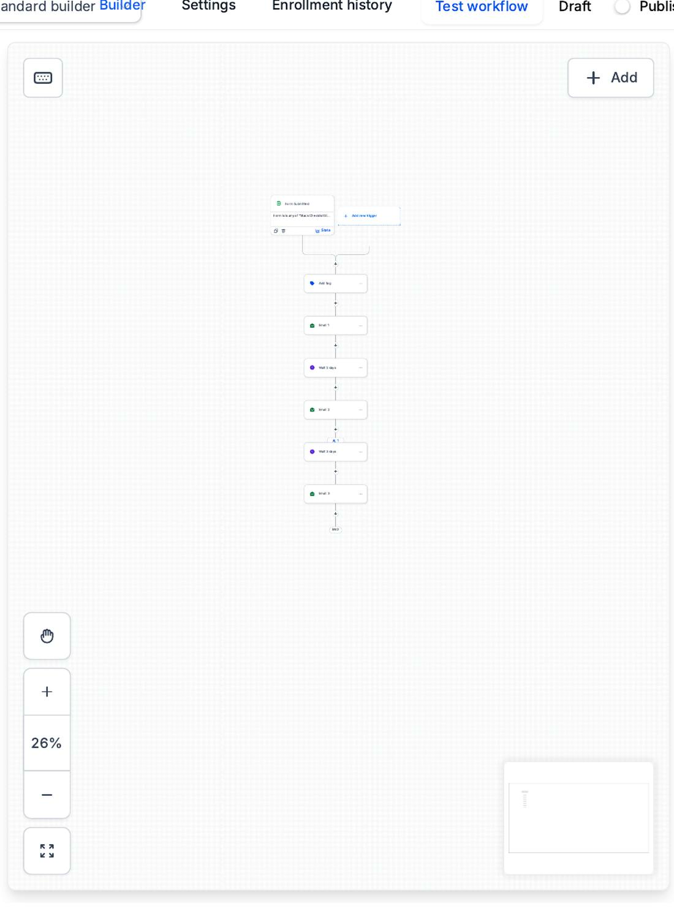

HighLevel Workflows: Your First Automation, and the Settings That Decide Whether It Fires
Try it: Visit HighLevel (affiliate link: we may be paid if you sign up, at no extra cost to you).
The four minute build: a booking confirmation
The workflow worth building first is the one that covers HighLevel's quietest gap: in our account the calendar's own appointment notification was switched off, so a booking confirmation workflow was the only confirmation a customer would ever receive. The build, in order:
- Create a workflow and choose the appointment booked trigger
- Add a Send Email action with your own subject and wording: what was booked, when, and what happens next
- Save it, then publish it. Publishing is a separate act from saving, and it is the step the next section is about
- Make a real test booking and watch for the enrollment, below
Total time in our account: about four minutes, most of it spent writing the email. The builder is not the hard part of HighLevel automation. The four settings after it are.

Setting 1: Draft means nothing fires
A saved workflow in Draft status enrols nobody and sends nothing, and it looks identical to a live one in the list until you read the status. Every "my workflow never runs" report starts here. After any build or edit, check the status reads Published before you test, and after you change a live workflow, check it has not dropped back to Draft in the process.
Setting 2: Allow Re-entry is on by default, and appointments ignore it anyway
Allow Re-entry decides whether a contact who has been through a workflow can be enrolled again. In our account it was switched on by default, which is the forgiving setting for confirmations and reminders. The surprise is in the setting's own help text: workflows triggered by appointments or invoices re-enter even when Allow Re-entry is switched off. So for booking confirmations, repeat bookings will re-trigger the workflow regardless of this toggle, while for a welcome sequence built on a different trigger, the toggle genuinely decides whether a returning contact gets the series twice. Know which kind of workflow you are holding before you touch it.
Setting 3: trigger filters combine with AND
Filters on a trigger narrow who enrols, and multiple filters must all be true at once. Add a filter for one calendar and another for one appointment status and the workflow fires only when both match, which is precise when you mean it and baffling when you added the second filter experimentally and forgot it. When a workflow fires for some contacts and not others, read the filters before you rebuild anything: the answer is usually a condition one group does not meet.
Setting 4: the trigger has to match the event
A workflow triggered by a form submission will never fire on a booking, and one triggered by an appointment will never fire on a form. It sounds too obvious to state, and it is one of the commonest causes of silent workflows, because HighLevel offers several similar looking triggers and the names differ by a word. If nothing enrols at all, and the status is Published, re-read the trigger before anything else.
Prove it fired: the enrollment record
Do not test a workflow by hoping. Every workflow keeps an enrollment history: who entered, when, and whether their run finished. Our test booking enrolled within seconds, the email sent, and the run closed with status Finished, which is the proof standard to hold every automation to. The same record is your first diagnostic when a customer reports a missing email: if they never enrolled, the problem is the trigger, the filters or the status; if they enrolled and finished, the problem is the email itself.
What workflows cost
Ordinary workflow actions are included in the subscription. Premium AI actions inside workflows, decision making and intent detection steps, cost $0.01 per execution, with Workflow Pro bundles from $10 a month for heavy use. A single business running confirmations, reminders and follow ups will likely never see the charge. The full money picture is in our HighLevel pricing guide.
The pre-flight checklist
- Status reads Published, not Draft
- Allow Re-entry set deliberately, knowing appointment and invoice triggers re-enter regardless
- Every trigger filter read once, as one AND statement
- Trigger matches the event you are actually waiting for
- One real test run, proved in the enrollment history with status Finished
The calendar settings this workflow depends on are in our HighLevel calendar guide, the first hour with a new account is in our HighLevel setup guide, and the platform verdict is in our HighLevel review.
Research note: behaviors described from our own HighLevel Starter account, tested November 2026, including a published booking confirmation workflow and its enrollment record. Premium action pricing from HighLevel's published AI pricing, checked November 2026. Defaults and menu names can change as the platform updates.